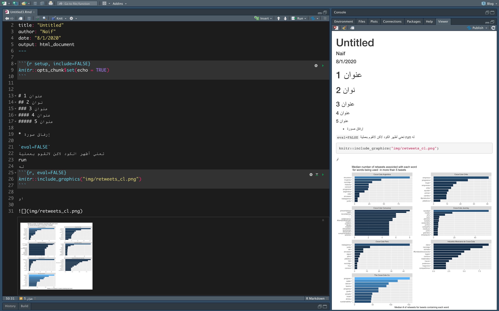
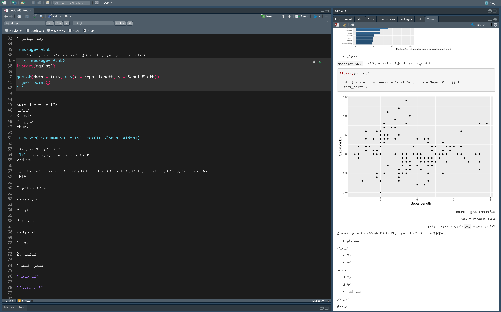
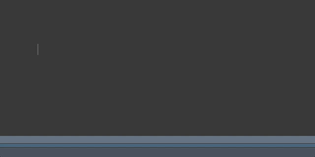
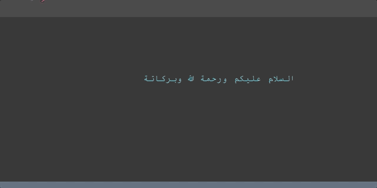
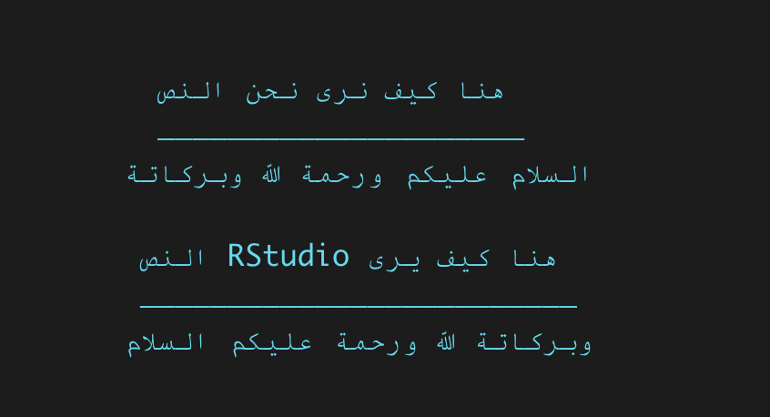
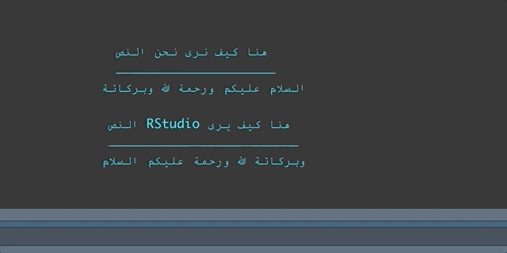
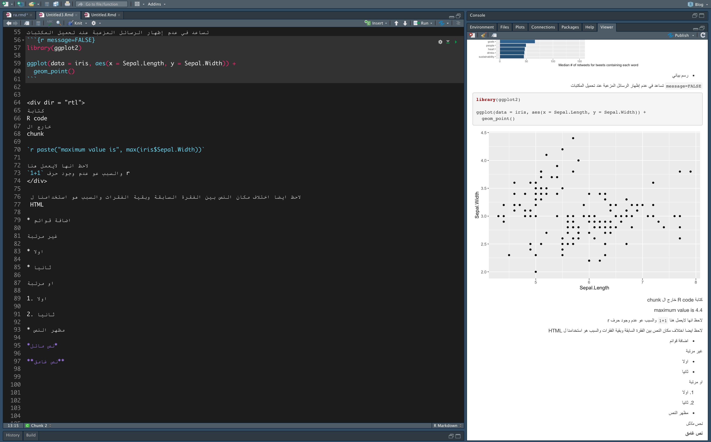

في هذا المنشور هنا كتبت عن R Markdwon بشكل مبسط لذالك إذا كنت لاتحمل اي فكرة عن R markdwon انصحك بقرائتة اما في هذا المنشور فسوف اكتب عن مشاكل الكتابة باللغة العربية في Rstudio وطرق تنسيق النص العربي في R Markdown.
الحلول الموجودة هنا نتيجة تجربة شخصية لذالك قد يكون هناك حلول افضل لاكن هذة الحلول كانت كفيلة بتحسين تجربتي.
في البداية سوف اعرض صورتين لتوضيح بعض خصائص R Markdown
ربما تحتاج الى تقريب الصورة


من الصور السابقة نلاحظ بإن دعم اللغة العربية ليس جيدا وذالك لعدة اسباب سوف احاول ان اسردها هنا وايضا بعض الحلول لها.
مشاكل الكتابة باللغة العربية
تنقسم المشاكل الى قسمين:
الكتابة في Rstudio IDE.
طريقة عرض التقرير النهائي (Rmarkdown).
سوف نستعرض اولا المشكلة الاولى
الكتابة في Rstudio IDE
تنقسم هذة المشكلة الى ثلاثة فروع
- إختلاف موضع المؤشر أثناء الكتابة
شاهد معي ال gif التالي

لاحظ بأن المؤشر لايستجيب بالشكل المطلوب
“جرب اكتب نص عربي في المتصفح او المذكرة وقارن كيف يستجيب المؤشر”
قد لاتعتبر هذة مشكلة بحد ذاتها لاكن تأثيرها يظهر عندما نحاول تحديد كلمة للتعديل عليها او حذفها وهي المشكلة الثانية
- إختلاف المؤشر أثناء التحديد
شاهد محاولتي لإزالة كلمة السلام وكيف اني قمت بحذف جميع الكلمات باستثنائها

السبب هو أن محرر Rstudio لايدعم الانتقال التلقائي للكتابة من اليمين لليسار حيث انة فقط يدعم الكتابة من اليسار لليمين
الصورة التالية توضح كيف يرى Rstudio النص

بمعنى انة رغم تحديدي لكلمة السلام فإن Rstudio يرى بأني قمت بتحديد كلمة وبركاتة
للتوضيح أكثر
المحرر يضع لكل كلمة رقم
مثلا السلام لانها أول كلمة تحصل على الرقم 1
ثم عليكم تحصل على الرقم 2
| وبركاتة | الله | ورحمة | عليكم | السلام |
|---|---|---|---|---|
| 5 | 4 | 3 | 2 | 1 |
اذا كان المحرر يدعم الإنتقال التلقائي للكتابة فسوف تتحول رؤيتة للنص للشكل التالي
| السلام | عليكم | ورحمة | الله | وبركاتة |
|---|---|---|---|---|
| 1 | 2 | 3 | 4 | 5 |
- هناك اكثر من حل
1- أن ناخذ Rstudio على قد عقلة
وهو ان تجاهل الكلمة ونتعامل بالارقام
مثلا اذا اردنا حذف كلمة السلام فإنا نقوم بحذف اول كلمة من جهة اليسار وهي وبركاتة

بصراحة هذا الاسلوب غير مجدي ومتعب خصوصا إذا كان النص طويل واردت حذف كلمة في المنتصف
الطريقة الثانية هي
2- استخدام Find > Replace
اولا من اجل إظهار خاصية Find & Replace
إذا كنت تستخدم Mac اضغط
command + F
أما إذا كنت تستخدم windows اضغط
ctrl + F
الان فقط كم بكتابة الكلمة التي تريد التعديل عليها في خانة Find والتعديل في خانة Replace

3- الكتابة في Text Editor ثم لصقها في Rstudio

ربما تعتبر هذة الطريقة الأسهل والاكثر فعالية
إذا اردت رأي الشخصي فأنا افضل الكتابة المباشرة في Rstudio وفي حالة رغبتي في التعديل أقوم بالتعديل مباشرة إذا امكنني حساب عدد الكلمات او استخدام خاصية Find & Place
5- استخدام محررات اكواد اخرى
Rstudio هو افضل IDE لاستخدام R بلا منازع
لذالك عند انتقالك الى محرر آخر فإنك سوف تضحي ببعض المميزات التي يقدمها Rstudio
لاكنك بالمقابل سوف تحصل على ميزات جديدة ربما انت في حاجتها
هناك العديد من المحررات التي يمكن استخدامها. على سبيل المثال، انا قمت بتجربة Visula studio Code في البداية لم اكن مرتاح لاستخدامة ، ربما بسبب تعودي على استخدام Rstudio لاكن التجربة لم تكن سيئة
هنا تجد منشور عن كيفية اساتخدام Visual Studio Code مع R
ربما تحتاج ايضا الى تحميل pandoc
إن شاء الله سوف احاول الكتابة عن تجربتي مع Visual Studio Code في اقرب وقت.
- دمج النص العربي مع الإنجليزي
لاحظنا في السابق أن محرر Rstudio لايتعامل بشكل مع النص اذا كان يكتب من اليمين الى اليسار لاكن ماذا سوف يحدث اذا دمجنا نصين مختلفين واحد باللغة العربية والآخر بالإنجليزية
المشكلة هنا هو انة ،مثل ماذكرنا سابقا، تكمن تعامل المحرر من النص العربي لذالك نرى هذا التصرف الغريب
- الحل
- الحل لهذة المشكلة هو بكتابة النص العربي في سطر والنص الإنجليزي في سطر آخر او أن تستخم Text Editor
للاسف يبدو بأن هذة المشكلة لن تحل في الوقت القريب من قبل Rstudio حيث انها مازالت مفتوحة في حساب Rstudio على Github انظر المشكلة هنا
المشكلة مع شكل المستند النهائي
كما لاحظنا في هذة الصورة بإن النص العربي يبداء من اليسار الى اليمين
والذي كان يجب ان يظهر بهذا الشكل

- الحل
حل هذة المشكلة هو بإضافة
css code
حمل ملف ال css من هنا
ثم قم بإضافتة الى البيانات الوصفية. تاكد بأن يكون الملف في نفس المجلد مع المستند
---
title: "untitled"
author: "Naif"
output:
html_document:
css: "rtl_botstrap.css"
---تم جمع هذا الملف من صفحة morteza/bootstrap-rtl على Github مع إضافة سطرين للتحكم بالكود